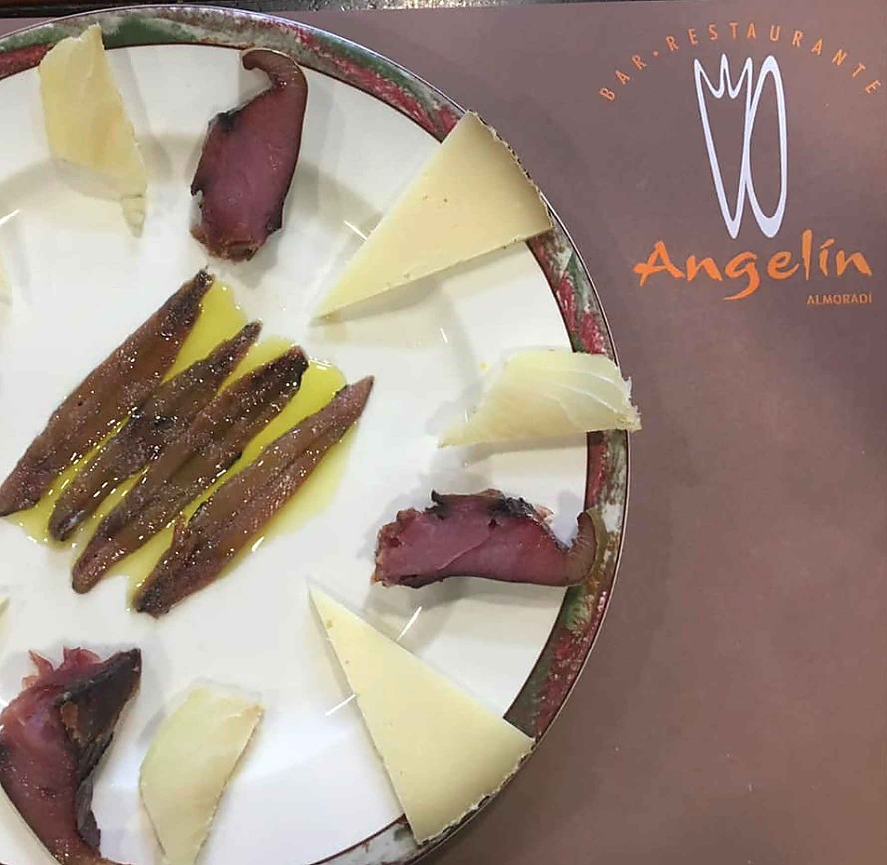
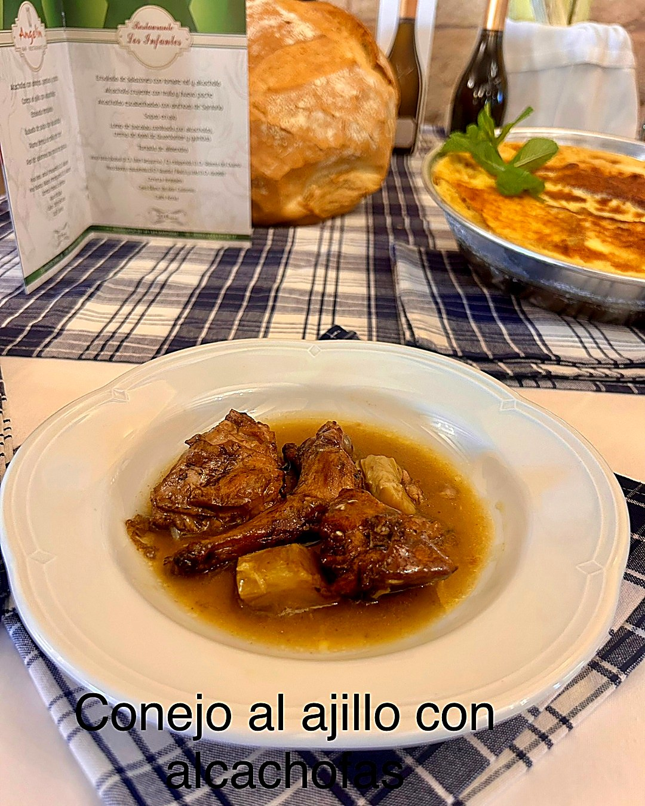
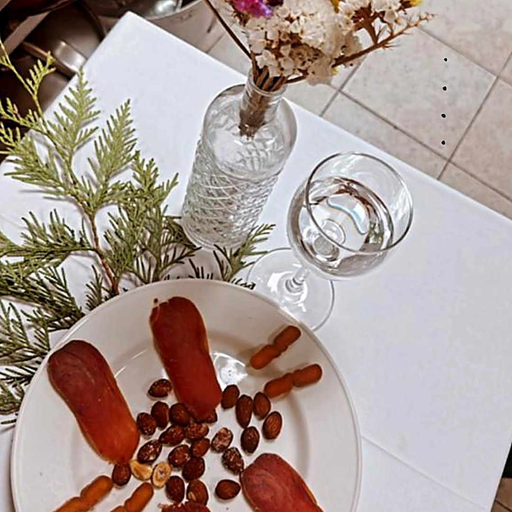
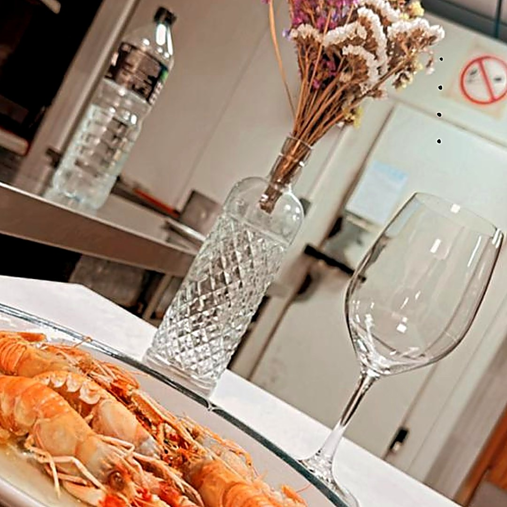
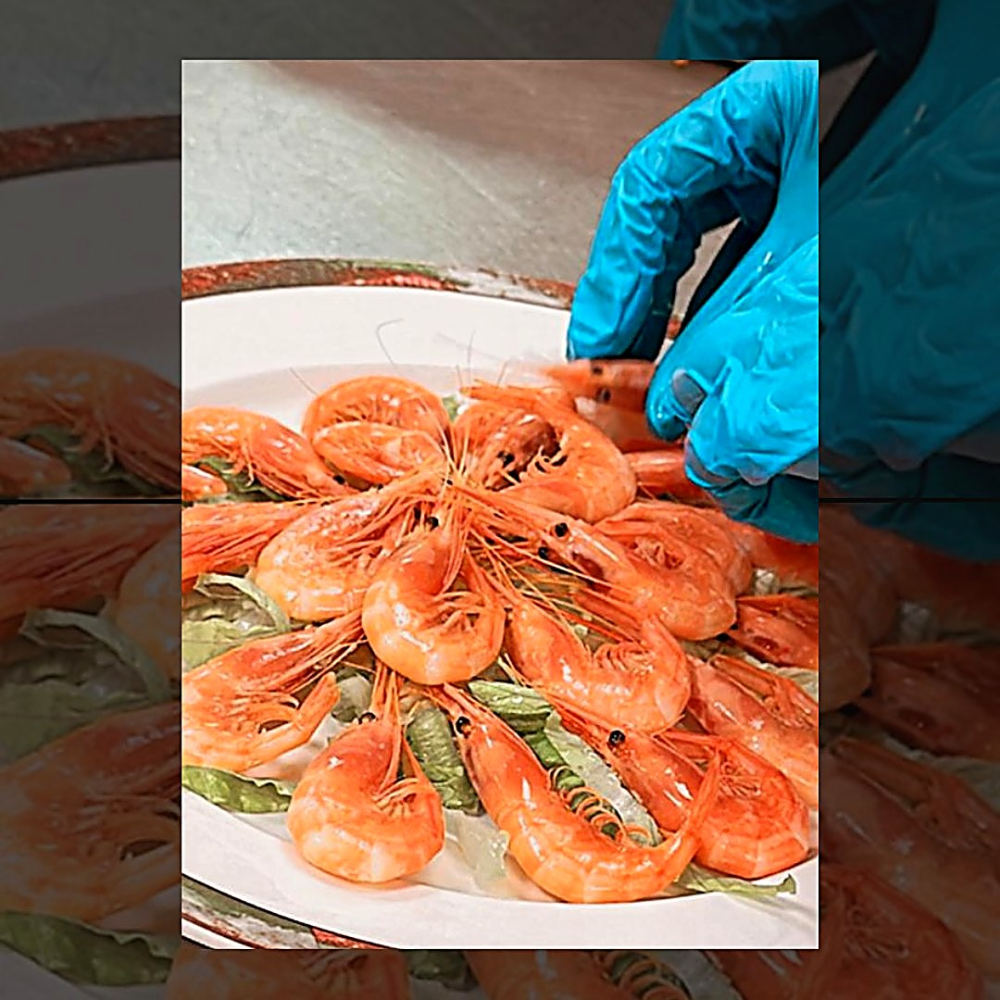
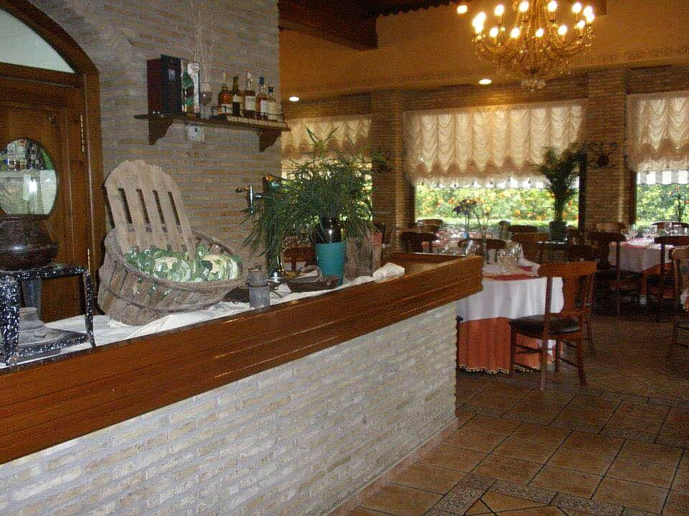

🌿 Nuestras alcachofas
A la plancha, rellenas, confitadas, en tempura. Con almejas o con conejo, según la temporada. Raciones para 4.
Carta
Casi toda la carta está en raciones para cuatro personas. La huerta manda la temporada; cuando vienen las alcachofas, son las protagonistas absolutas.
Marzo · Jornadas de la Alcachofa
Cada año, durante la Muestra de la Alcachofa y el Congreso Nacional de la Alcachofa, Angelín saca un menú dedicado a la alcachofa de la Vega Baja. Este es el menú real:
Maridaje: Vino tinto Sorrasca (Petit Verdot, Almansa) · Vino blanco Vionta (Albariño) · Cerveza Mahou 5 estrellas · Agua Bezoya.
Reserva con antelación: 965 70 08 78.
Categorías
Casi todo en raciones para 4 personas. Pregunta por las medias raciones o consulta el menú digital actualizado.
A la plancha, rellenas, confitadas, en tempura. Con almejas o con conejo, según la temporada. Raciones para 4.
Gambas y langostinos del Mediterráneo · cigalas a la plancha · mariscada de la casa · almejas a la marinera.
Encurtidos de la casa · semiconservas marinas · variados de despensa. Para arrancar la mesa.
Ensaladas de la huerta · embutidos y quesos · tortillas de temporada. Raciones para 4.
Carnes a la brasa · pescados del día · guisos de cuchara en temporada · especiales del cocinero.
Manitas de cerdo · ternera en salsa · callos · pelotas. Menú del día también disponible en barra.
Carta de vinos seleccionada · buenos cócteles de la casa · cafés y digestivos · postres caseros.
Los precios y disponibilidad cambian con la temporada. Ver el menú digital de Ágora TPV.
Galería
Los espacios y los productos que cuentan Angelín. Click en cualquier foto para verla en grande.
Fotografías del propio Facebook oficial del restaurante.








¿Te apetece probarlo?